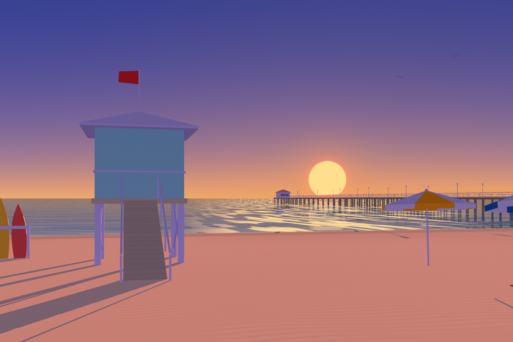
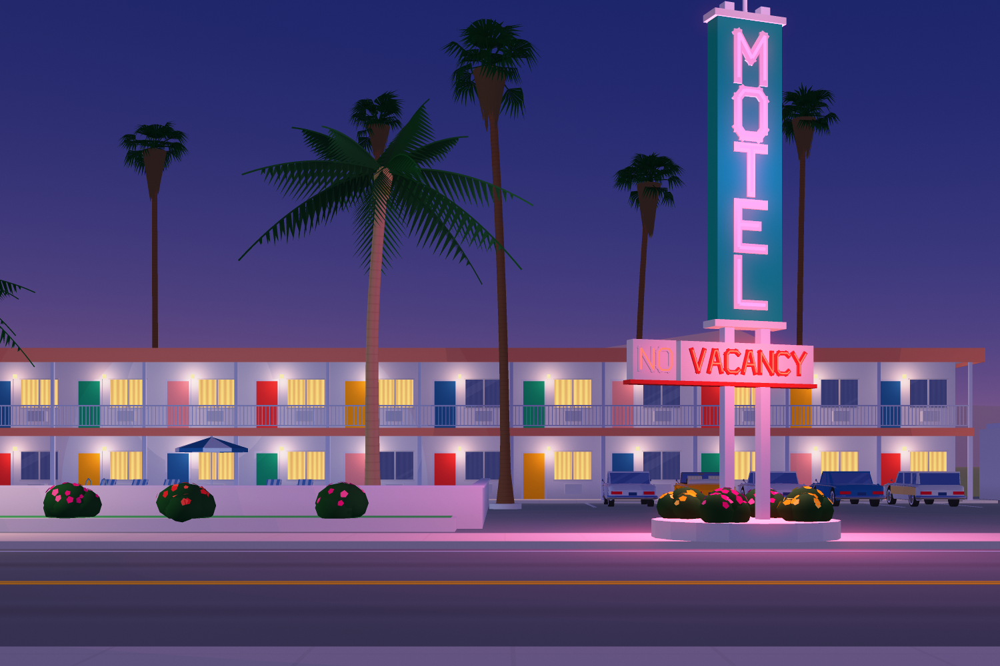
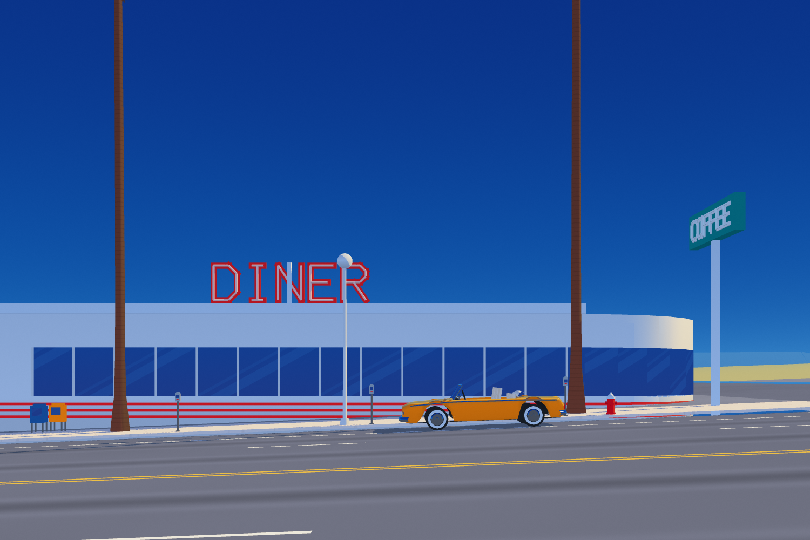
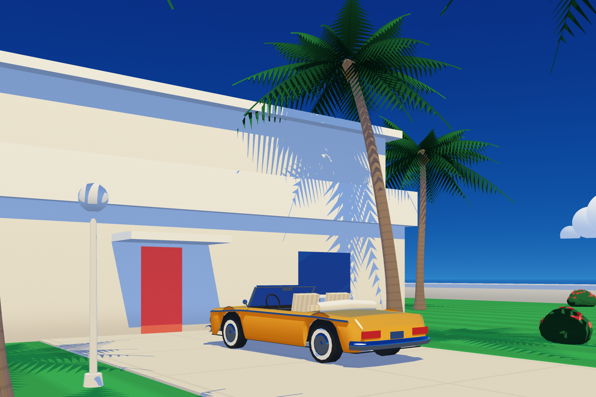
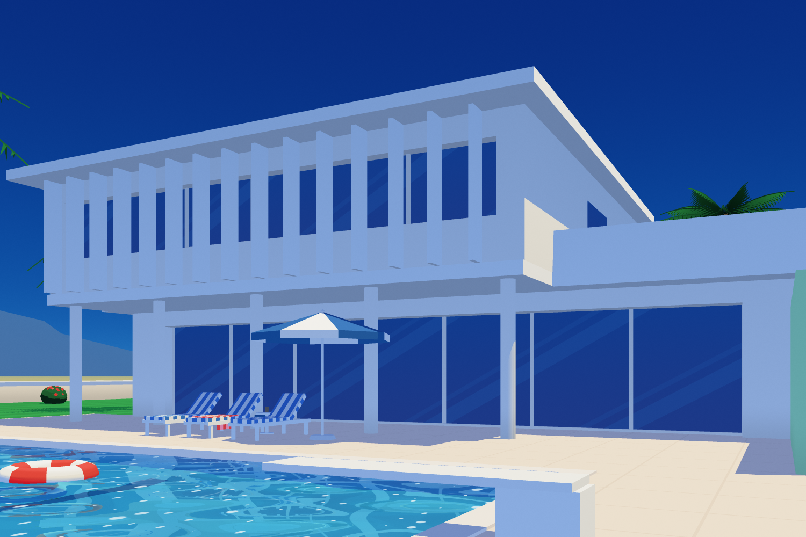
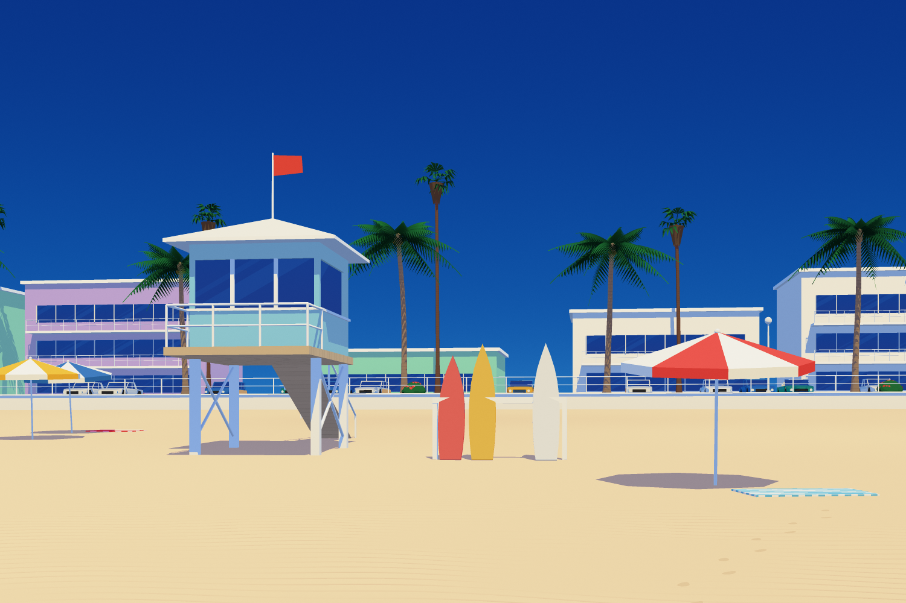
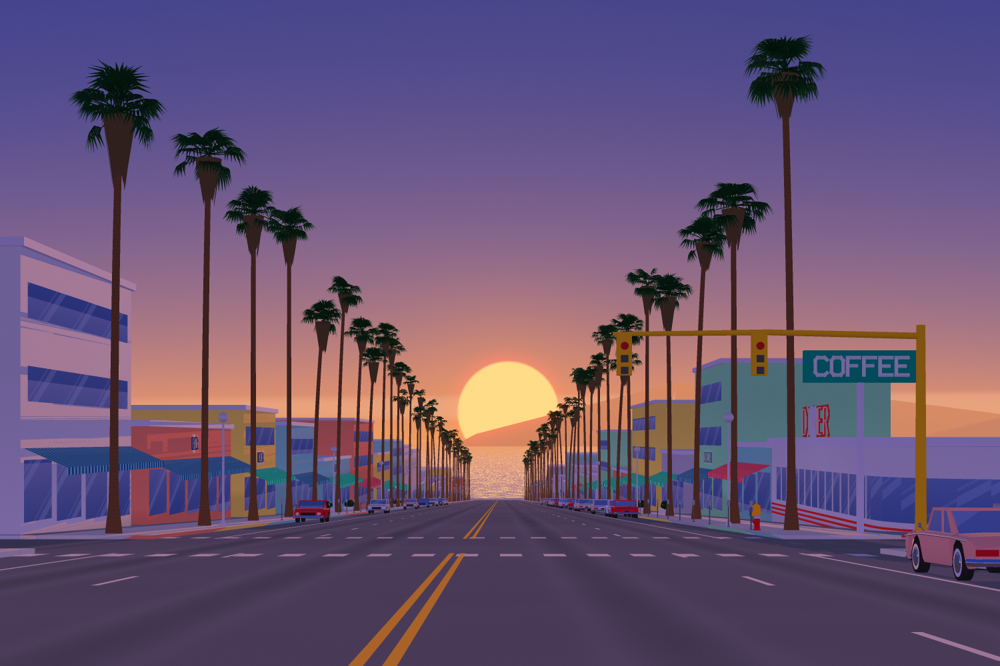
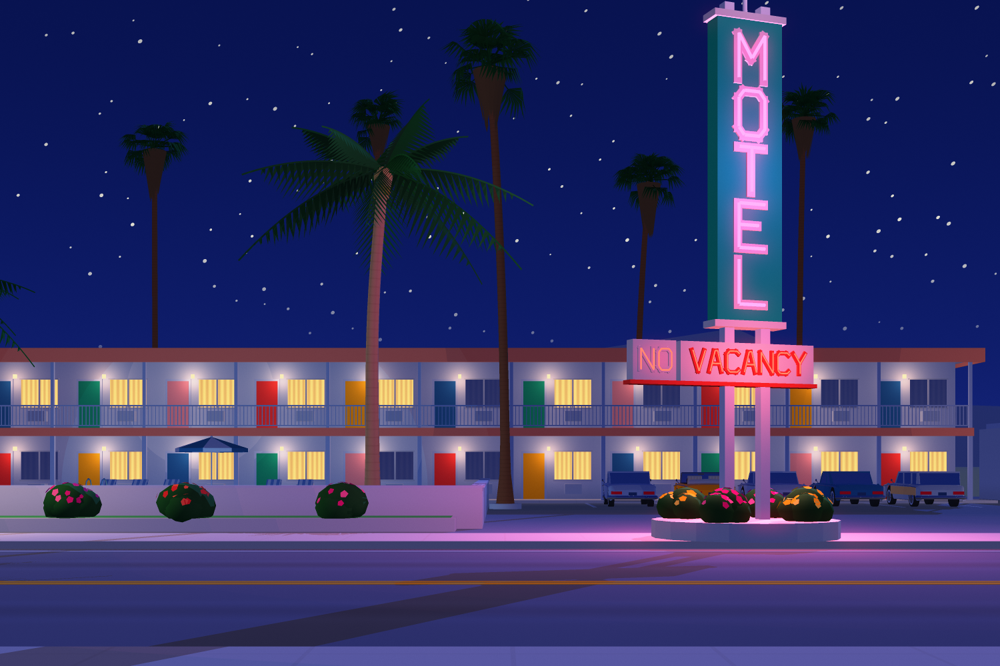

Ten postcards from one summer day in Paloma Bay, sent by someone who never appears in any of them.

Ten to five. All night the sign has been telling an empty highway MOTEL, and since midnight NO VACANCY. Behind the building the sky is getting ready. One of the cars in the lot is yellow.

Breakfast is at the diner on the corner. The yellow car waits at the curb, pointed at the sea, the way you park when you already know where you are going next.

Mid-morning the car goes out to the house on the point and parks with its nose to the door. The palms print their shadows on the wall. The house has been waiting, the way houses by the sea do.

Somebody has been at the pool: a towel on the middle lounger, a book face down to keep the place, a glass on the little table. The float is taking its time about the shallow end.

By two there is a towel on the sand, an umbrella shading nobody, and a gap in the rack where the blue board was.
From halfway down the pier the beach looks barely started, like a page with one word on it. The blue board is back, lying on the sand next to the towel.
At six the marina is full of boats going nowhere. One slip in the middle is empty. The red sloop has gone out past the lighthouse.

Twice a year the sun goes down exactly at the bottom of the boulevard. This is one of those evenings, and every palm on both sides of the street has lined up to watch.
The lighthouse comes on at dusk whether or not anyone is out there. This evening somebody was, and came in with the last of the light.

The yellow car is back outside its door, and the sign has had second thoughts: NO VACANCY. Wish you were here.
Every picture here was painted by Vacant Sunlight, a software renderer written from scratch for this project in plain JavaScript: no libraries, no textures, no photographs, no models. Paloma Bay itself (a motel on the coast highway, a boulevard that points at the midsummer sunset, a beach with a pier, a house on the point, a marina) is grown from rules and fixed seeds, so every postcard shows the same town. The sun follows its real path over 34° north in late July. Shadows are traced exactly, water holds the world upside down, and the light is painted, not simulated: three values to a wall, airbrushed skies, a little grain.
The visitor keeps a schedule, and the town on the site keeps the same one: open it at a given hour and the yellow car will be wherever this book says it is.
The style is a homage to the sunlit, deserted resort paintings of Hiroshi Nagai, made without borrowing any of his images.